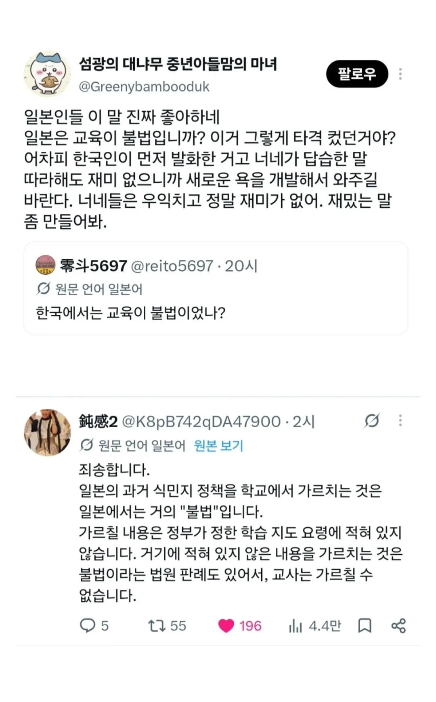

이거 ㄹㅇ임?

이거 ㄹㅇ임?
문화승리 시켜주마
교사가 자기 맘대로 더 가르치면 이제 환빠교육이나 본인의 정치색이 들어간 내용을 멋대로 주입시킬 수 있으니 자제하는게 맞는데
이제 그게 법으로 지정되어서 잘못한거 뚜껑덮어버리기에 쓰이니..
몇 몇 일본인이랑 대화해봤는데 이게 모든 사람이 그런게 아니라 몇케이스겠지만 좀... 많이 심각하더라
모르면 그나마 양반이야. 제일 문제는 책한권만 읽은 사람처럼 공교육에서 안 알려주니 인터넷으로 역사를 배우는 사람들이 많아서 대동아공영권을 진짜로 믿어버린다든가 위안부나 난징대학살은 조작되었고 프로파간다라고 진지하게 말하는 사람들이 있더라...
하늘이 없는곳에서
하늘을 떠들고있네
요샌 숏츠같은데에서 배우더라 ㅋㅋ
한 7~80년도는 일본 진보 작가나 감독들이 영상매체로도
자기들이 태평양전쟁때 만주 민간인이랑 오키나와 주민 대상으로 악행 저지른거, 강제징용이나 만주 항일 조선인 같은 인물, 자신들의 민낯 같은 거 보여주곤 했는데
요즘은 일본 패망 하루 전(일본의 가장 긴 하루) 영화 리메이크도 내용 미화시켜서
'어쩔 수 없었어' '미국이랑 소련이 우리를 압박하는데 그럼 어떡해?' '그래서 다 같이 죽자고?' '봐봐 우린 항복 할 생각 하고 있는데 계속 미군이 민간인 폭격 하잖아? 이게 강제가 아니고 뭐임' 이런 메세지나 전달하고 있으니
우리나라도 교사들이 은근히 알개모르게 하는 교육 있지 않음?
30대인데 나 중고딩땐 정치색 사상교육 교사가 대놓고주입함
나 때도 대놓고 주입함
나도 그랬는데 학생회장이 교육청에 꼰지르고 선생 전근감 ㅋㅋ
어떤 색이었는지, 안 봐도 알 거 같음
국사, 한자, 국어, 사회
케로로 안본 돼지년이 케로로 모자는 일본군 모티브라 침략미화만화다 한 년 생각난다
만화봤으면 개솔인걸 아는데
솔직히 이해는 감 사실 우리는 개새끼들입니다 이걸 어린 학생들에게 가르친다? 내가 일본인이었어도 반대함 가르친다 하더라도 최대한 좋게 해석해서 가르치겠지 우리로 치면 우리 민족은 선량하고 평화를 사랑해서 맨날 쳐맞기만 했습니다 이런식으로 가르치지만 솔직히 걍 개ㅈ밥이라 동네북마냥 허구한날 쳐맞은거지 뭘 평화를 사랑해
????: 우리는 타인을 베려하는 심성이있습니다
동네북마냥 맞은것도 아니었어 심심하면 가서 패고 그랬어 삼국시대때는 고구려는 유명했고 통일신라때도 신라구라고 해적들이 일본가서 진짜 난장판 벌이면서 약탈해댔고 고려구도 마찬가지 조선은 조금만 쿨타임 돌면 여진족 슬레이어 본능이 되살아나서 여진족들을 '최종해결책' 해버림
임진왜란 막 끝나고 나서 개판 난 조선에서조차도 실전경험 만땅 차있는 조선군이 제일 먼저 한게 북쪽으로 군대 끌고 가서 여진족을 개박살낸거임.
애초에 우리나라가 동네북 마냥 만만했으면 저 인구 넘사벽인 중화문명 옆에서 독자적인 세력으로 남아있질 못했음.
평화를 위해선 어쩔 수 없었다니깐요
외국 침략한 적 없다고 가르치는 게 젤 이상함. 광개토대왕 장수왕이 넓힌 영토는 뭐, 가위바위보 이겨서 땀? 신라 고구려 백제는 맨날 ㅈ나게 싸운 거 같던데, 누가 선빵 안 치고 날짜시간 정해서 야차 뜬 거임?
나가서 깃발 박았으니 우리땅이고
우리땅이니까 외국 침략한적 없단 마인드ㅋㅋㅋ
우리나라도 베트남전쟁때 민간인 학살이 몇건있었지
글고 평화어쩌고는 이미 학계에서 폐기된지 오래임.
오래된 사람이라 라떼는 그렇게 배웠다
약간 핀트가 다른 얘기긴 한데
교과서에 없는 내용을 가르치는게 불법이면
창조론 가르치는 것도 불법이겠네?
학교에서 창조설을 가르치진 않겠지
ㄹㅇ 전쟁이 아니라 가서 봉사활동한줄 알더라? ㅋㅋㅋ
전에 비슷한 내용으로 글을 적었는데,
내가 2011년~2013년 일본 살면서 다양한 사람하고 친해졌는데.
70~90대 할배들은 역사를 제대로 알고 있음.
그래서 술집에서 친한 할배들은 종종 취하면 한국에게 몹쓸짓을 많이 했고
그걸 보면서 자라서, 항상 미안하다. 나라가 사과를 제대로 해야 하는데 그러지 못했다는 경우가 정말 많았음
그리고 50~60대는 대충은 다 알고 있고, 그 양반들 젊을 시절에는
그나마 한국에 반성하는 분위기도 있다보니, 과거에 그런 일들이 있었지..
우리는 겪어보지는 않았지만, 그래도 일본이 하나씩 사죄를 했으니 그만 해도 되지 않나? 이런 느낌이고
30-40대는 교육을 개차반으로 받은 유토리세대가 많아가지고
미친놈들이 역사를 지 좆대로 생각하는놈들이 태반임. 오히려 왜 자꾸 사죄를 하라고 하냐
다른 목적이 있는거 아니냐는 경우도 종종 봄.
10-20대는 그냥 교육 자체를 안해서 애들이 역사를 모름.
관심도 없고, 독도가 뭔지도 모르고, 과거 일본이 뭘 했는지도 모름
더 웃긴건 원폭을 맞았다는것도 모르는 애들도 많았음.
비난하는건 아닌데, 2010년 이후로 지금까지 쭈욱 이런 느낌으로 해오기 때문에
젊은 세대는 역사 자체를 모르거나, 유튜브나 이상하게 지 좆대로 생각하는
케이스가 많은듯함.
하지만 K한류가 최근 젊은층에서 크게 불면서
현지 10~20대 젊은층의 한국 이미지가 아주 좋아졌다는건 사실임
(친구가 오사카에서 한국어 학원하는데 역대급으로 학생 등록 수가 늘었음 거진 다 10~20대 ㅋㅋ)
젤 심각한 게 피해자 마인드임
우린 원폭이랑 폭격의 피해자다
국가가 시키는 데 개인이 뭘 할 수 있는가
전후 우리도 힘들었다
독일은 결국 히틀러를 뽑은 건 독일 국민 본인이었다는
걸 인정하고 자신들에게도 책임이 있다고 가르침
그 집단적 광기에 자신들도 책임이 있다고 배움
피해자 마인드고 나발이고 지금 젊은 세대는 원폭을 쳐 맞았다는 사실만 알고
왜 쳐 맞았는지는 제대로 안가르쳐서, 역사관이 이상함.
그리고 독일도 사실 독일 시민들이 반성한다고 하지만,
독일이 힘있는 유럽 국가들에게 사과를 하고 반성을 하지만
힘 없고 목소리 못내는 아프리카 국가들에게는 아직도 사과를 안하고 뭉갠 케이스도 있음.
이건 그래서 나라별로 보는 관점이 다름(나도 몰랐는데 해외 있을때 다른 나라 사람에게 들어서 처음알음)
병신 잽랜드 ㅋㅋㅋㅋ
저거 90년대 말 2000년대 고이즈미가 한 역사교육 방침에 저항한 교사들 처벌해서 생긴 판례인가보네
지금 10~30들은 개인적으로 찾아보는거 아니면 모르더라. 그냥 전쟁이 있었다 정도
그래서 kpop열풍 부는 건가 싶기도하고